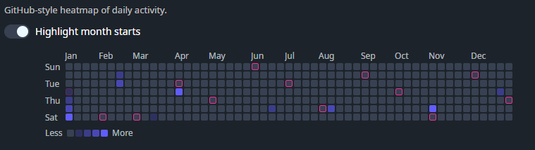

DaisyContributionGraph is a GitHub-style contribution heatmap graph (7 rows × 53 weeks). Provide day entries via Contributions, and the control renders a compact year overview with optional month/day labels, hover tooltips, and a “Less/More” legend.
Each entry is a DaisyContributionDay:
| Property | Description |
|---|---|
Date |
The calendar day (date portion is used). |
Count |
Numeric count shown in the tooltip text. |
Level |
Intensity level (clamped to 0–4). Level drives the cell's visual intensity. |
| Property | Description |
|---|---|
Size (DaisySize) |
Control size (ExtraSmall through ExtraLarge). Automatically adjusts cell size, margins, corner radius, and font sizes. Respects FlowerySizeManager global sizing. Default: Medium. |
Contributions (IEnumerable) |
Data points used to populate the graph. Days not present render as level 0 / count 0. |
Year (int) |
Which year to display (default: current year). |
StartDayOfWeek (DayOfWeek) |
Which day is shown as the first row. Default: Current culture's first day of week (Monday in Europe, Sunday in US, etc.). Can be overridden explicitly. |
ShowLegend (bool) |
Shows/hides the "Less/More" legend (default: true). |
ShowToolTips (bool) |
Enables/disables per-cell tooltip text (default: true). |
ShowMonthLabels (bool) |
Shows/hides month labels above the grid (default: true). |
ShowDayLabels (bool) |
Shows/hides day labels on the left (default: true). |
HighlightMonthStartBorders (bool) |
When true, cells that represent the 1st of a month get a secondary-colored border (default: false). |
CellSize (double) |
Cell size in pixels (default: 12 for Medium size). Automatically set when Size changes. |
CellMargin (Thickness) |
Margin around each cell (default: 1). Automatically set when Size changes. |
CellCornerRadius (CornerRadius) |
Corner radius for each cell (default: 2). Automatically set when Size changes. |
Cells are rendered as Border elements with Classes="daisy-contribution-cell" and Tag set to the level (0–4). You can override the color/intensity by adding styles for selectors like:
<Style Selector="Border.daisy-contribution-cell[Tag=4]">
<Setter Property="Background" Value="{ThemeResource DaisySuccessBrush}" />
<Setter Property="Opacity" Value="1" />
</Style><!-- Basic graph with inline sample data -->
<controls:DaisyContributionGraph Year="2025" Width="720">
<controls:DaisyContributionGraph.Contributions>
<x:Array Type="{x:Type controls:DaisyContributionDay}">
<controls:DaisyContributionDay Date="2025-01-01" Count="1" Level="1" />
<controls:DaisyContributionDay Date="2025-01-02" Count="3" Level="2" />
<controls:DaisyContributionDay Date="2025-01-03" Count="7" Level="3" />
<controls:DaisyContributionDay Date="2025-01-04" Count="11" Level="4" />
</x:Array>
</controls:DaisyContributionGraph.Contributions>
</controls:DaisyContributionGraph>
<!-- Compact, labels off -->
<controls:DaisyContributionGraph Year="2025"
ShowLegend="False"
ShowMonthLabels="False"
ShowDayLabels="False"
CellSize="8"
CellMargin="1" />Level to a normalized 0–4 bucket in your data layer; the control clamps values outside that range.ShowToolTips="False" if you want a purely decorative heatmap.CellSize and keep ShowMonthLabels/ShowDayLabels off for very dense dashboards.